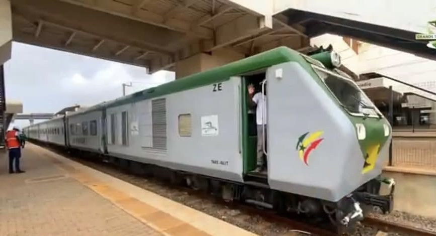
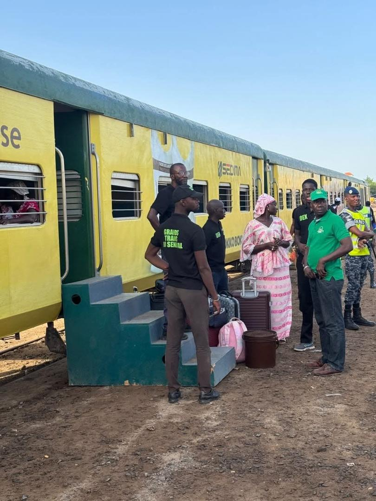

Ce que nous faisons
Deux activités, une même exigence
De la gare à l'entrepôt, GTS-S.A. couvre l'ensemble de la chaîne de transport ferroviaire, au service des voyageurs comme des entreprises.
01
Transport de voyageurs
Desserte interurbaine reliant Dakar aux principales villes du pays : Thiès, Tivaouane, Mékhé, Touba. Nos gares et abris voyageurs sont progressivement modernisés, et notre billettique renouvelée pour un embarquement plus fluide.
02
Transport de fret
Acheminement de marchandises par voie ferrée, une alternative fiable et économique à la route pour accompagner la croissance des activités économiques et industrielles du pays.
Notre flotte
Trains et matériel roulant
Aperçu du parc de locomotives et de rames en service sur le réseau national.



Chiffres clés
Un réseau en pleine relance
- Lignes desservies
- Dakar · Diamniadio · Thiès · Tivaouane · Mékhé · Touba
- Type de trafic
- Voyageurs interurbains et fret
- Matériel roulant
- Rames "Réversibles" et locomotives mises à niveau
- Partenariats sécurité
- CFS,Brigade Nationale des Sapeurs-Pompiers & Gendarmerie